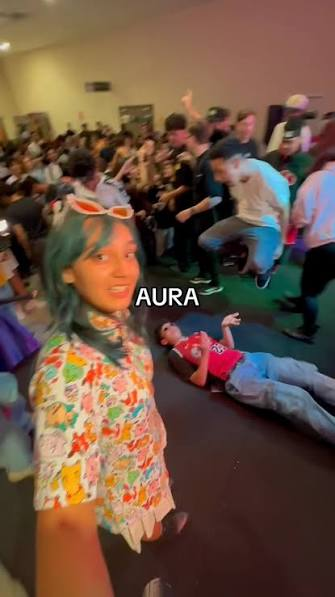

Cosplay ao Meio-Dia
Ser otaku e gamer em Roraima é para os fortes. Fazer cosplay com roupa de couro na Praça das Águas exige resistência, e as reviravoltas dos nossos eventos locais dariam uma verdadeira peça de Ariano Suassuna. Mas a paixão pela cultura pop vence qualquer barreira (ou temperatura).